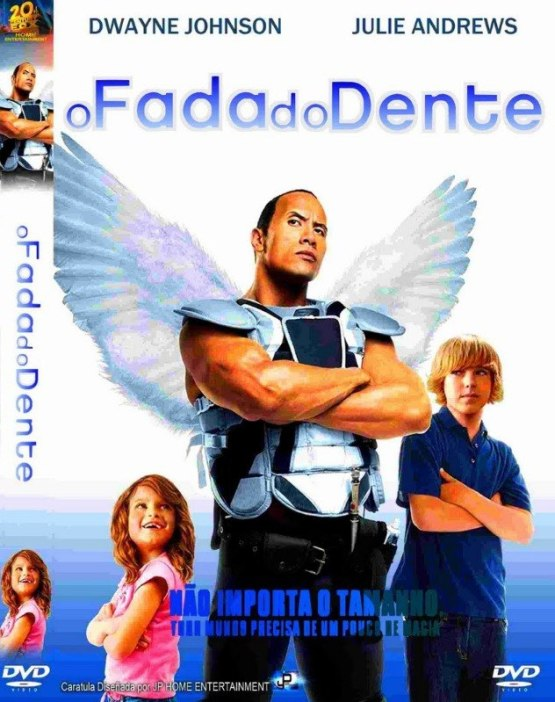
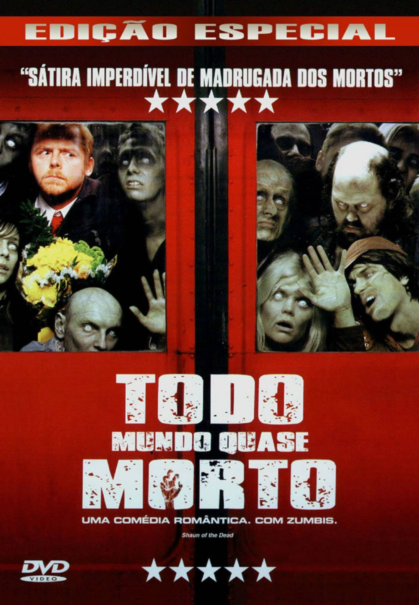

A morte do treinador de basquete de infância de velhos amigos reúne a turma no mesmo lugar que celebraram um campeonato anos atrás. Os amigos, acompanhados de suas esposas e filhos, descobrem que idade não significa o mesmo que maturidade.

O jogador de hóquei Derek Thompson é o terror do gelo e leva o apelido de "Fada do Dente" por quebrar os dentes de seus adversários. Quando Derek acaba com o sonho de uma jovem fã, ele é rapidamente sentenciado a cumprir pena de uma semana, representando uma real fada do dente, com asas e varinha mágica. Embora ele não goste muito, seu novo trabalho o ajuda a redescobrir seus sonhos deixados para trás.
Shaun trabalha como vendedor e divide uma casa com seu melhor amigo. Ele costuma ir sempre ao pub local, mas Liz, sua namorada, está cansada de fazer sempre o mesmo programa. Irritada, ela decide terminar a relação. Shaun, arrasado, decide beber todas, sem notar que as pessoas à sua volta estão se tornando zumbis.
